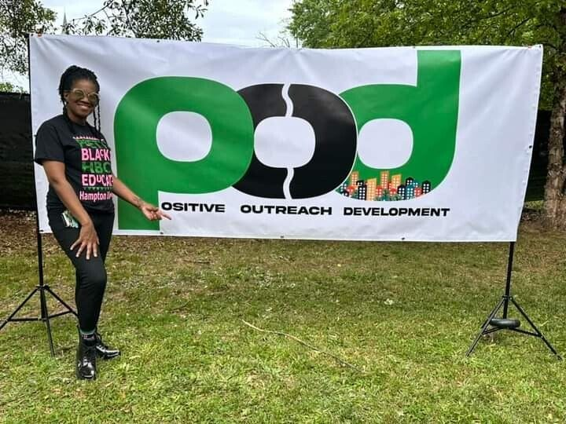

Resources
We serve as a bridge to the resources and support people need, and walk alongside them on the way to stability and successful reintegration.
If you are coming home
Let us help you find and follow a path to successful reentry. Our team gives guidance, resources and steady help through the process.
Housing
We work with housing partners in Georgia and other states to find suitable, safe housing. Our own Reentry Home is in development.
Work
Employment connections with business owners and companies, and skill-building workshops. Job skills classes
Legal and parole
Help with legal proceedings, parole preparation and community credibility. Legal services: MW Consulting.
Recovery and mental health
Personal, nonjudgmental recovery support with local and national partners, and Mind C.A.R.E. Read more
A mentor
Credible messengers who have made the same journey and know the road.
Reentry, pre-entry and intervention
The Life Unit, Inc. brings solutions to many community needs.
If someone you love is inside
If you want your loved one to come home prepared, encouragement has to go beyond hope. It has to be intentional. Urge them to take on the work of change now. Reentry doesn’t begin at the door; it begins with the decision to change.
Through S.I.P.P. (the Support Incarcerated Population Program), we connect people who are incarcerated with POD before release. Email us to start the process.

For communities and organizations
Community development. We work hand in hand with communities to understand their needs, set goals and put long-term strategies in place. To serve a community well, you first have to understand it.
Resource management. We help communities manage and make the most of their resources, with guidance that promotes efficiency and long-term growth.
Partnerships. By partnering with organizations moving in the same direction, we approach recidivism as a whole problem: a coordinated network of resources, accountability and opportunity.
Partner organizations
- The Life Unit, Inc.Reentry, pre-entry and intervention services
- MW Consulting FirmLegal services
- B.A.N.G. (Believe and Never Give Up)Positive engagement and habilitation-focused support in underserved communities
- 1Way Youth Entrepreneur CenterBusiness skills for young people
- A Tyme to Thrive Beyond GriefVictims’ support and gun violence prevention
- Local law enforcement agenciesWorking together for safer communities